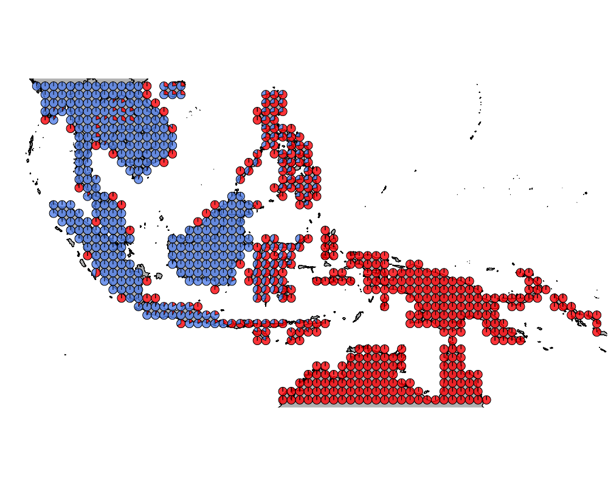
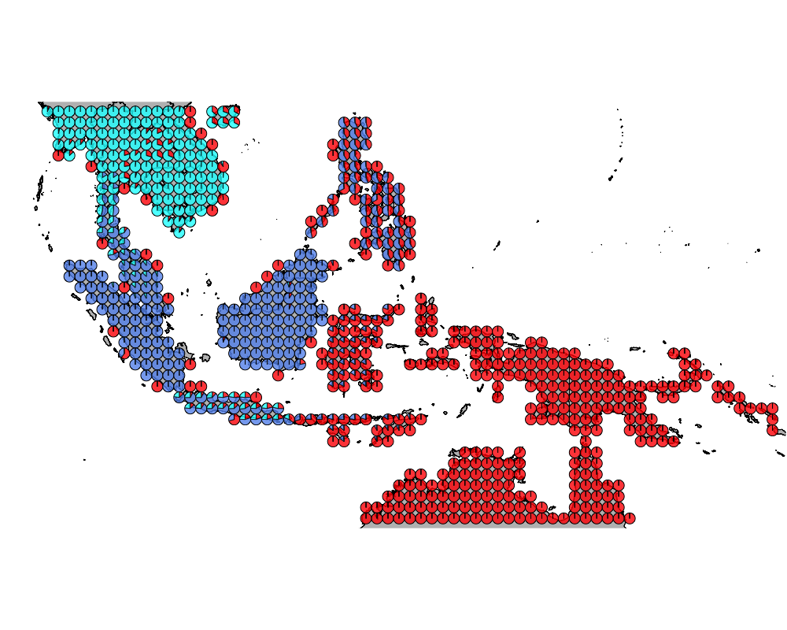
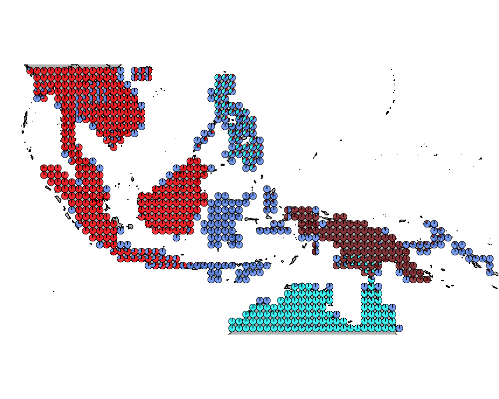
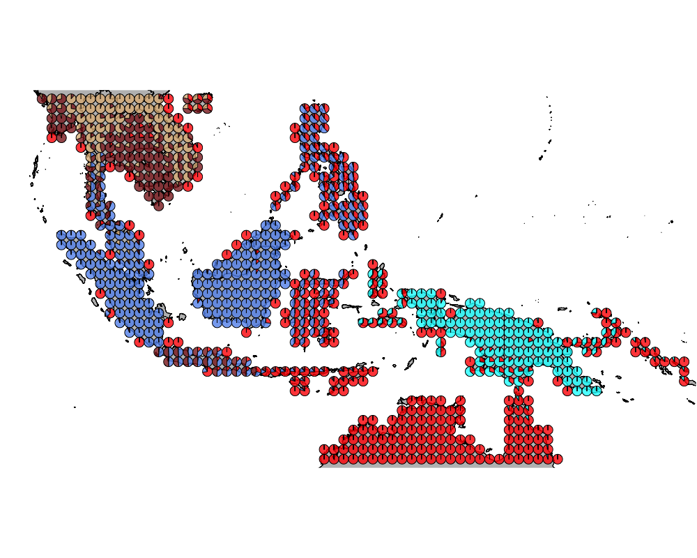
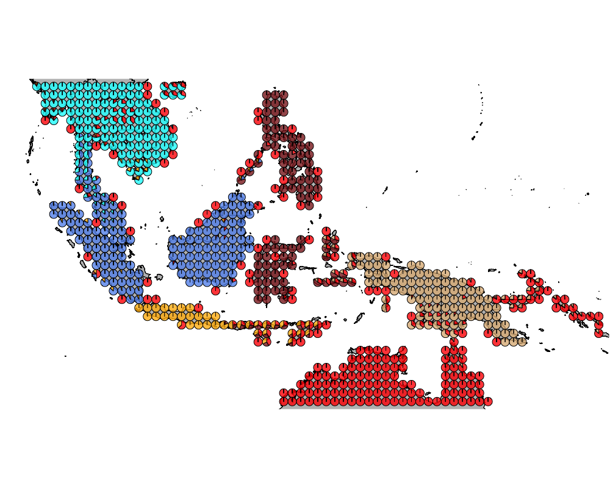
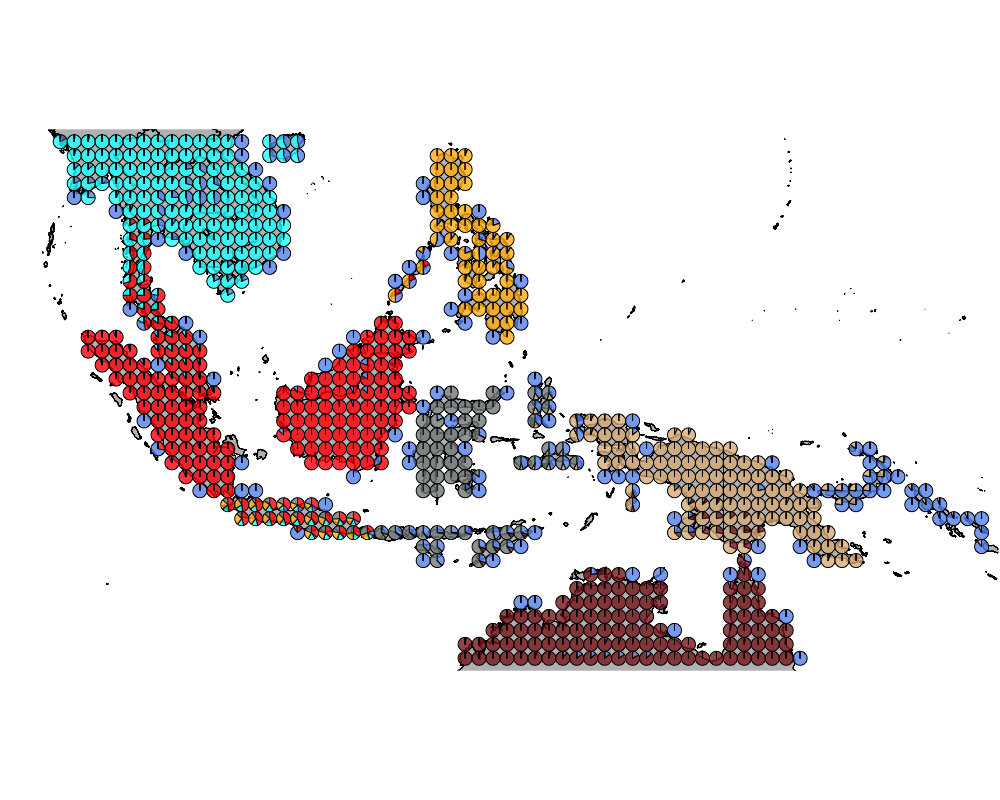
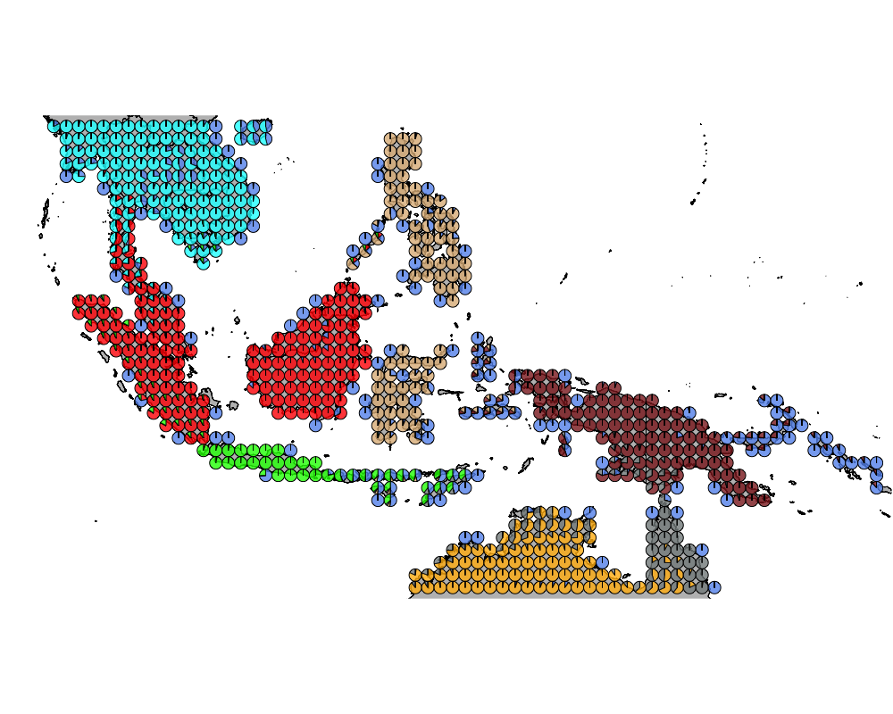
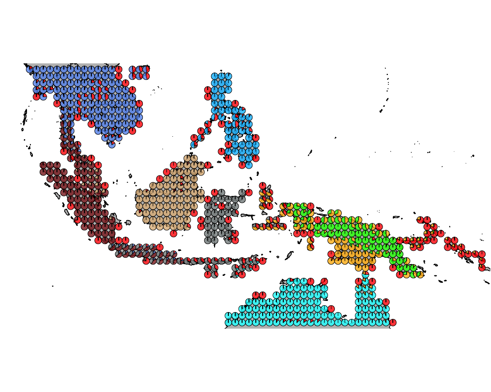
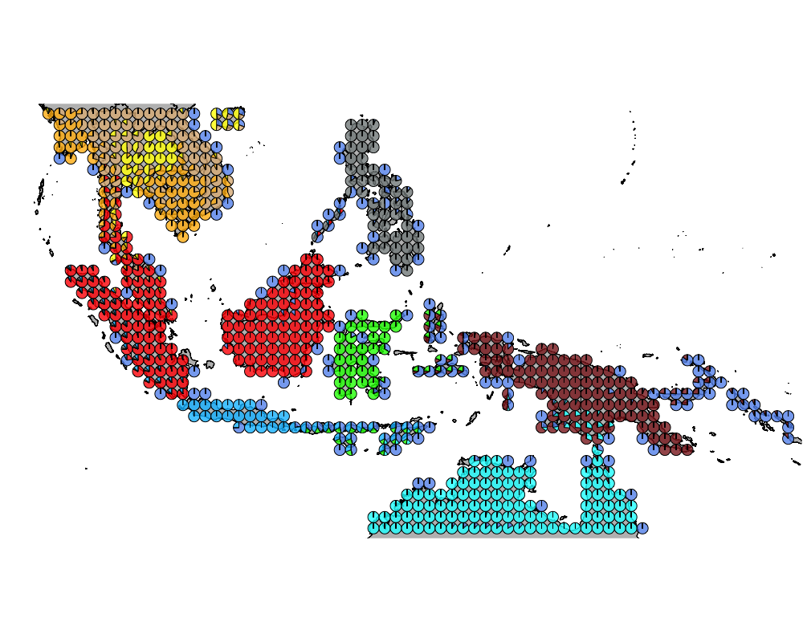
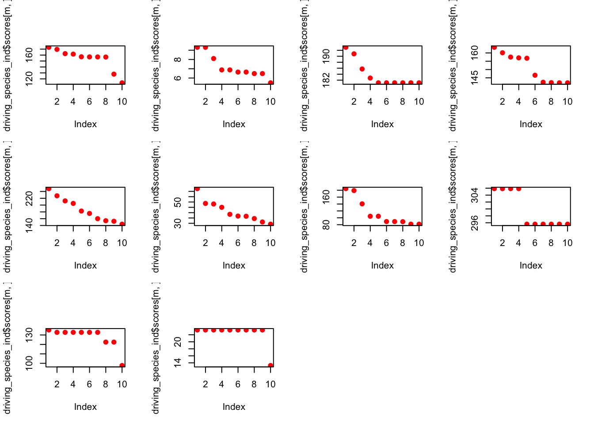

Wallacea region GoM analysis
Kushal K Dey
3/25/2018
Intro
Here we observe the presence absence data of bird species in the Australasian region (Wallacea). We try to interpret that in the context of our Grade of Membership (GoM) model and its applications to presence absence data.
Packages
Load the data
Wallacea Region data
datalist <- get(load("../data/wallace_region_pres_ab_breeding_with_seabirds.rda"))
latlong <- datalist$loc
data <- datalist$dat
if(nrow(latlong) != nrow(data)) stop("dimensions matching error")Map of Wallacea
world_map <- map_data("world")
world_map <- world_map[world_map$region != "Antarctica",] # intercourse antarctica
world_map <- world_map[world_map$long > 90 & world_map$long < 160, ]
world_map <- world_map[world_map$lat > -18 & world_map$lat < 20, ]
p <- ggplot() + coord_fixed() +
xlab("") + ylab("")
#Add map to base plot
base_world_messy <- p + geom_polygon(data=world_map, aes(x=long, y=lat, group=group), colour="light green", fill="light green")
cleanup <-
theme(panel.grid.major = element_blank(), panel.grid.minor = element_blank(),
panel.background = element_rect(fill = 'white', colour = 'white'),
axis.line = element_line(colour = "white"), legend.position="none",
axis.ticks=element_blank(), axis.text.x=element_blank(),
axis.text.y=element_blank())
base_world <- base_world_messy + cleanup
base_world
birds_pa_data_3 <- dataPresence absence GoM model
Applying methclust presence absence Grade of Membership model to the presence absence data
topics_clust <- list()
topics_clust[[1]] <- NULL
for(k in 2:10){
topics_clust[[k]] <- meth_topics(birds_pa_data_3, 1 - birds_pa_data_3,
K=k, tol = 10, use_squarem = FALSE)
}
save(topics_clust, file = "../output/methClust_wallacea_w_seabirds.rda")topics_clust <- get(load("../output/methClust_wallacea_w_seabirds.rda"))color = c("red", "cornflowerblue", "cyan", "brown4", "burlywood", "darkgoldenrod1",
"azure4", "green","deepskyblue","yellow", "azure1")
intensity <- 0.8
for(k in 2:10){
png(filename=paste0("../output/Wallacea_w_seabirds/geostructure_birds_", k, ".png"),width = 1000, height = 800)
map("worldHires",
ylim=c(-18,20), xlim=c(90,160), # Re-defines the latitude and longitude range
col = "gray", fill=TRUE, mar=c(0.1,0.1,0.1,0.1))
lapply(1:dim(topics_clust[[k]]$omega)[1], function(r)
add.pie(z=as.integer(100*topics_clust[[k]]$omega[r,]),
x=latlong[r,1], y=latlong[r,2], labels=c("","",""),
radius = 0.5,
col=c(alpha(color[1],intensity),alpha(color[2],intensity),
alpha(color[3], intensity), alpha(color[4], intensity),
alpha(color[5], intensity), alpha(color[6], intensity),
alpha(color[7], intensity), alpha(color[8], intensity),
alpha(color[9], intensity), alpha(color[10], intensity),
alpha(color[11], intensity))));
dev.off()
}The geostructure plot for different K.

geostructure2

geostructure3

geostructure4

geostructure5

geostructure6
  
 ## Driving Bird Species
We obtain the driving bird species for each cluster using the CountClust package.
driving_species_ind <- ExtractTopFeatures(topics_clust[[10]]$freq, method = "poisson", options = "min")
species_names <- apply(driving_species_ind$indices, c(1,2), function(x) return (rownames(topics_clust[[10]]$freq)[x]))
species_names## [,1] [,2]
## [1,] "Ixos malaccensis" "Anthreptes simplex"
## [2,] "Pterodroma brevipes" "Pterodroma leucoptera"
## [3,] "Chalcites osculans" "Ramsayornis fasciatus"
## [4,] "Melilestes megarhynchus" "Gymnocrex plumbeiventris"
## [5,] "Arborophila brunneopectus" "Zoothera marginata"
## [6,] "Ardeola grayii" "Leptoptilos dubius"
## [7,] "Streptopelia dusumieri" "Tanygnathus lucionensis"
## [8,] "Ceyx fallax" "Ducula radiata"
## [9,] "Alcedo euryzona" "Coracina javensis"
## [10,] "Charadrius alexandrinus" "Dendrocopos major"
## [,3] [,4]
## [1,] "Iole olivacea" "Rhizothera longirostris"
## [2,] "Megapodius eremita" "Aerodramus spodiopygius"
## [3,] "Dicaeum hirundinaceum" "Artamus personatus"
## [4,] "Ninox theomacha" "Peltops blainvillii"
## [5,] "Niltava macgrigoriae" "Chloropsis hardwickii"
## [6,] "Picus viridanus" "Dinopium shorii"
## [7,] "Cacatua haematuropygia" "Ducula carola"
## [8,] "Gallicolumba tristigmata" "Ramphiculus epius"
## [9,] "Halcyon cyanoventris" "Lonchura ferruginosa"
## [10,] "Gorsachius magnificus" "Halcyon pileata"
## [,5] [,6]
## [1,] "Rollulus rouloul" "Prionochilus maculatus"
## [2,] "Geoffroyus heteroclitus" "Cacatua ducorpsii"
## [3,] "Aquila audax" "Chalcites basalis"
## [4,] "Loriculus aurantiifrons" "Gerygone chrysogaster"
## [5,] "Blythipicus pyrrhotis" "Seicercus poliogenys"
## [6,] "Calandrella raytal" "Haliaeetus leucoryphus"
## [7,] "Ninox randi" "Microhierax erythrogenys"
## [8,] "Aramidopsis plateni" "Coracias temminckii"
## [9,] "Padda oryzivora" "Pitta guajana"
## [10,] "Hirundapus cochinchinensis" "Niltava davidi"
## [,7] [,8]
## [1,] "Rhinortha chlorophaea" "Platysmurus leucopterus"
## [2,] "Haliaeetus sanfordi" "Ducula pistrinaria"
## [3,] "Elseyornis melanops" "Eurostopodus argus"
## [4,] "Harpyopsis novaeguineae" "Ailuroedus buccoides"
## [5,] "Arborophila rufogularis" "Pomatorhinus ferruginosus"
## [6,] "Phalacrocorax fuscicollis" "Anastomus oscitans"
## [7,] "Surniculus velutinus" "Terpsiphone cinnamomea"
## [8,] "Coracina leucopygia" "Loriculus stigmatus"
## [9,] "Psilopogon armillaris" "Orthotomus sepium"
## [10,] "Pycnonotus sinensis" "Sturnus sericeus"
## [,9] [,10]
## [1,] "Meiglyptes grammithorax" "Pycnonotus cyaniventris"
## [2,] "Ducula rubricera" "Dicaeum aeneum"
## [3,] "Hamirostra melanosternon" "Pachycephala rufiventris"
## [4,] "Megatriorchis doriae" "Microdynamis parva"
## [5,] "Pomatorhinus ochraceiceps" "Stachyris ambigua"
## [6,] "Saxicola leucurus" "Clanga hastata"
## [7,] "Dicaeum bicolor" "Picoides maculatus"
## [8,] "Picoides temminckii" "Rhamphococcyx calyorhynchus"
## [9,] "Sturnus melanopterus" "Stachyris melanothorax"
## [10,] "Surniculus dicruroides" "Hemixos castanonotus"The weighting on the influence of the top 10 driving birds on the clusters for each of the 10 clusters under the K=10 model.
par(mfrow=c(3,4))
for(m in 1:10){
plot(driving_species_ind$scores[m,], col='red', pch = 20, cex = 1.5)
}
This R Markdown site was created with workflowr